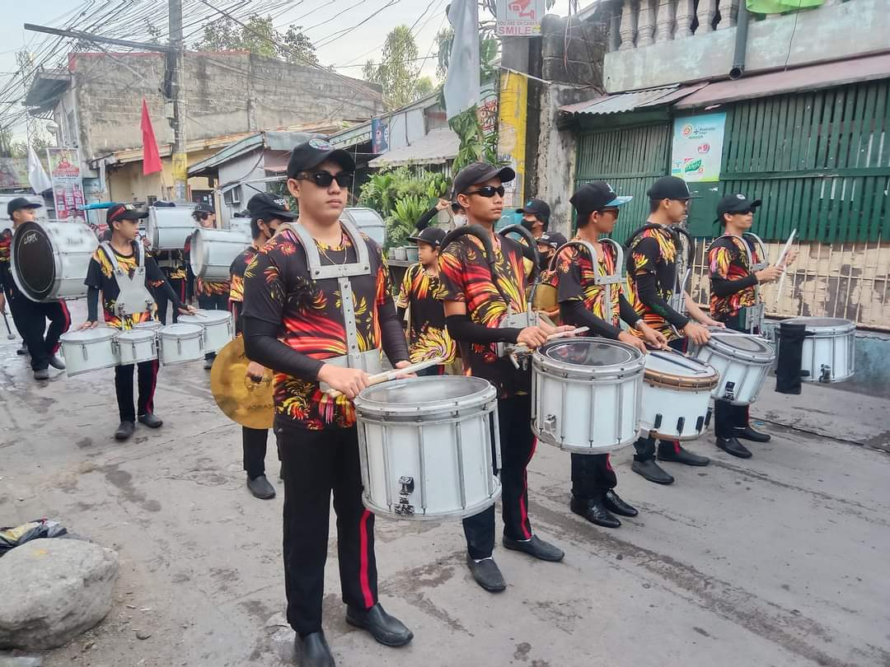
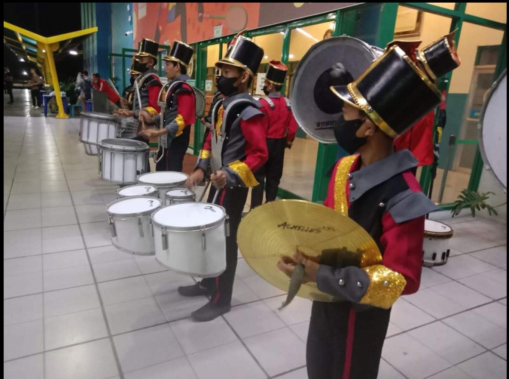

The Muntinlupa Black Diamonds is now recruiting new aspiring musicians and performers.
The Muntinlupa Black Diamonds or MBD for short is a drum and bell community marching band. It is founded by Elvin C. Calalang in the year 2000.
Muntinlupa Black Diamonds envision itself to bring festive feelings in any event and to be a highly competitive band that competes on competitions nationwide
To be able to bring festive feelings and be a highly competitive band. The Muntinlupa Black Diamonds trains aspiring youth to be professional and highly disciplined individual to be able to give their best performance for the audience.
Music
Brotherhood
Discipline
Majorettes uses baton; a handheld aluminum stick with rubber caps at both end. In this position you'll learn steps and figures using the baton. This group is also known as the face of the band because they are often faced upfront of the audience.
Colorguards uses flags with certain designs. In this position you'll learn steps and figures using the flag. This group gives color to the band hence the name colorguards.
Mallets uses the xylophone; a wooden case with metal bars that creates sound when striked. In this position you'll learn how to play songs and musical pieces using the xylophone. This group is the main voice of the band that sings a song or a musical piece by playing the xylophone.
Drummers uses a variety of drums; base drum, snare drum, quintom, and cymbals. In this position you'll learn how to play this different kinds of drums but you can only choice one to be able to master it well and play along side your other bandmates with different kinds of drums. This group is the main beat of the band. The tempos of songs depends on them. They are also the energizer of the band.